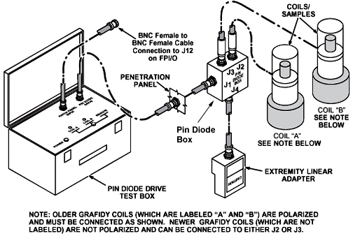
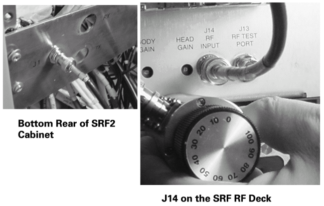
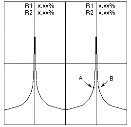

Operating Documentation
Direction 5440000, Rev# 5
Signa HDxt Service Methods
Module Version 4.0, Version Date 11/11/09
Operating Documentation |
| Required Persons | Preliminary Reqs | Procedure | Finalization |
|---|---|---|---|
| 1 | Not Applicable | 3 to 6 | Not Applicable |
Grafidy 3 will take 3 hours if running a full procedure on a BRM and 6 hours if running the full procedure on a TwinSpeed doing WHOLE and ZOOM.
| Item | Qty | Effectivity | Part# | Manufacturer | |
|---|---|---|---|---|---|
| Rotary Attenuator (10 dB/step) | 1 | - | 46-255838P2 | - | |
| One of the following Grafidy kits | 1 | - | 46-271417G1 - 1.5T | - | |
| - | - | - | 46-307164G1 - 1.5T | - | |
| - | - | - | 46-307164G2 - 1.5T | - | |
| - | - | - | 46-307164G3 - 1.0T, 1.5T | - | |
| - | - | - | 46-307164G4 - 1.0T, 1.5T | - | |
| ||||
| Poison hazard | ||||
| The phantom contains CuSo4. | ||||
| Do not ingest. Dispose of as a hazardous waste according to state and federal regulations. |
| Condition | Reference | Effectivity |
|---|---|---|
- | - | |
- | - |
Remove the Head Coil and holder from the cradle.
Select the coils from the kit that matches the system type.
Place the coil baseplate on the cradle, and configure the Grafidy coil/samples and collars appropriately for the first axis on which Grafidy will be performed. (See the Illustration 1.)
Illustration 1: Grafidy Phantom Configurations

| NOTE: | In the X and Z configurations, the coil/sample is placed with the sample at the top. In the Y configuration, the top coil/sample is placed with the sample on top, while the lower coil/sample is inverted so that the sample is on the bottom. Also in the Y configuration, no collars are used beneath the bottom sample. |
To complete Step 4 through Step 10, refer to for Illustration 2.
Illustration 2: Grafidy Kit Setup

Plug the Extremity/Linear Adapter into the Quad Head Coil Carriage Assembly, and connect a two-foot coaxial cable from Extremity/Linear Adapter BNC to J4 on the Pin Diode Box.
| NOTE: | There are multiple lengths of cable used for this portion of the procedure. The short cable is the two-foot cable, the medium length cable is either an eight-foot or five-foot, and the long cable is any cable length that will accommodate the long cable runs: 90-foot cable, a combination of 30-foot cables, or a custom cable that you may have created. |
Connect the long coaxial cable from J1 on the Pin Diode Box to a service coaxial feed-through on the Penetration Panel (Exam Room side).
Route the cable through the bore of the magnet, exiting at the rear.
Connect the other end of the cable to the Pin Diode Drive Test Box. (See Illustration 2.)
| NOTE: | It is not necessary to use a 90-foot cable. This length is usually supplied in some Grafidy kits; other kits are supplied with three 30-foot cables. Use the length of cable that best suits the site. |
Landmark on the centerline of the Grafidy coil baseplate, not the coils. On the front of the magnet enclosure, press LANDMARK and MOVE TO SCAN on the keypad.
Verify that the switch on the Pin Diode Drive Test Box is in the Remote position.
Connect a BNC cable from the TRIGGER INPUT (called PATCH PANEL INPUT on some older boxes) connector on the Pin Diode Drive Test Box to J12 (DAB out 6) on the FP I/O Board on the front of the RRF chassis.
Plug in the power cord for the Pin Diode Drive Test Box.
Place the power switch for the Pin Diode Drive Test Box in the On position (referred to as 1).
RFS Cabinets: Install a rotary step attenuator set to 20 dB in series with the cable connected to J14 (RF Input) on the back of the RF Amplifier.
RF/PDU (SRFD), SRF and SRF2 Cabinets: Install a rotary step attenuator set to 20 dB between J1 on the rear of the System Cabinet (exciter output) by disconnecting the cable at J1 on the back of the RF Cabinet and installing the attenuator between the cable and J1.
| NOTE: | An alternative is to use J14 on the fiber optic bracket
at the rear of the RF Amplifier. (See Illustration 3.) Illustration 3: SRF and SRF2 Attenuator Points  |
RF/PDU (SRFD): Although envelope feedback is not employed on the RF/PDU Cabinet, attenuation is still required. Install a rotary step attenuator set to 20 dB in series with the cable connected to J14 RF INPUT on the front of the RFI module.
Center the laser crosshairs on top of the coils and landmark the system, and Advance to Scan to 0 mm.
Begin a new patient scan and enter geservice as the Patient ID.
Enter a Patient Weight of 111 lbs.
Be sure that the Patient Protocols selection is [SERVICE].
Click the [Other] button and choose [Grafidy].
Click [Accept].
Click [Save Series].
Right-click [Research Operations], and select [Setup Parms] (may result in a few second pause).
Once open, enter the following:
Number of frames: 4 and press <Enter>.
Window one: frame 1, frame 0 and press <Enter>.
Window two: frame 3, frame 0 and press <Enter>.
| NOTE: | <Enter> has to be pressed after typing each number, or the values will not be saved. |
Select [Done] to close the frames window.
To verify research operations, select [Display CVs] (control variables) and set the mode to 1 (default is 0). This will make prescan much faster.
Click the [Accept] button.
Research operations: Select [Download].
Select [Manual Prescan] to begin the Center Frequency Coarse Check.
Select [Window] and [Two Windows] from the Window menu. On the double window two peaks will display that should be approximately the same amplitude within 50%. (See Illustration 4.)
Illustration 4: Typical Grafidy Prescan

Select [Done].
Select <Auto Prescan>.
If Auto Prescan fails, adjust the rotary step attenuator to 30 db (from 20 db). Occasionally, it may need to be adjusted to 10 db instead (from 20 db). Auto Prescan again until it is successful.
No finalization steps.